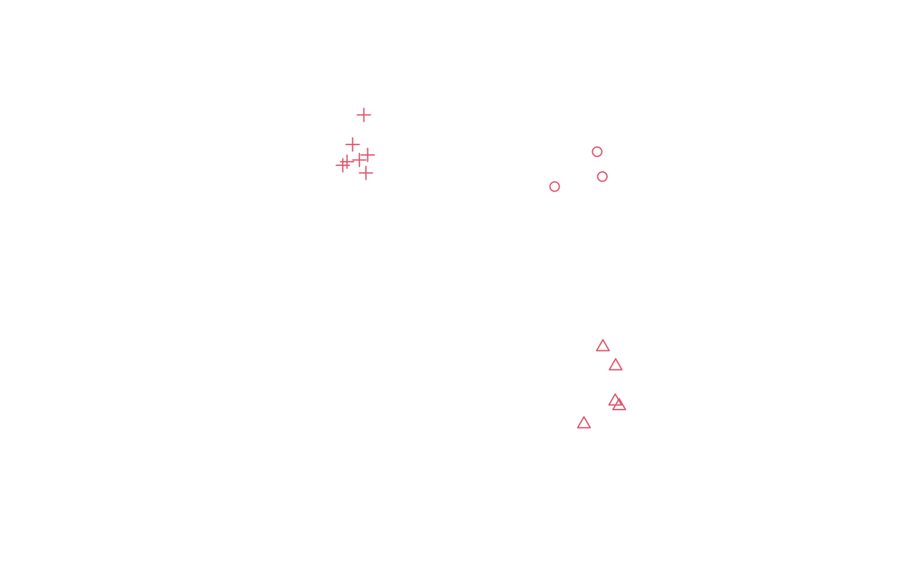

SpatialMultiPoints-class.RdClass for (irregularly spaced) MultiPoints
Objects can be created by calls of the form SpatialPoints(x).
coords:Object of class "list", containing the
coordinates of point sets (each list element is a matrix)
bbox:Object of class "matrix", with bounding box
proj4string:Object of class "CRS", projection string
Class "Spatial", directly.
signature(x = "SpatialMultiPoints"): subsets point sets
signature(from = "SpatialPoints", to = "data.frame"):
coerce to data.frame
signature(obj = "SpatialMultiPoints"): retrieves
all the coordinates, as one single matrix
signature(x = "SpatialPoints", y = "missing"): plot points
signature(object = "SpatialPoints"): summarize object
signature(x = "SpatialPoints"): add point symbols to plot
signature(object = "SpatialPoints"): prints coordinates
signature(object = "SpatialPoints"): rbind-like method
The plot method for “SpatialPoints” objects takes the following arguments:
object of class SpatialPoints
default 3; either an integer specifying a symbol or a single character to be used as the default in plotting points
default FALSE; a logical value indicating whether both axes should be drawn
default FALSE; add to existing plot
default NULL; the x limits (x1, x2) of the plot
default NULL; the y limits of the plot
passed through
default FALSE; set the par “usr” bounding box, see note in Spatial-class
default 1; numerical value giving the amount by which plotting text and symbols should be magnified relative to the default
default 1; default plotting color
default 1; line width
default 1; colour to be used for the background of the device region
cl1 = cbind(rnorm(3, 10), rnorm(3, 10))
cl2 = cbind(rnorm(5, 10), rnorm(5, 0))
cl3 = cbind(rnorm(7, 0), rnorm(7, 10))
mp = SpatialMultiPoints(list(cl1, cl2, cl3))
plot(mp, col = 2, cex = 1, pch = 1:3)

mp
#> SpatialMultiPoints:
#> [[1]]
#> [,1] [,2]
#> [1,] 10.318447 10.357445
#> [2,] 9.285841 11.034092
#> [3,] 10.869094 9.571326
#>
#> [[2]]
#> [,1] [,2]
#> [1,] 10.886738 1.42260893
#> [2,] 9.960896 -0.25811487
#> [3,] 12.213438 0.44084084
#> [4,] 9.768334 0.25428522
#> [5,] 9.015674 -0.02562433
#>
#> [[3]]
#> [,1] [,2]
#> [1,] -0.43270350 9.755816
#> [2,] 0.52600028 9.437798
#> [3,] 0.59928980 10.184914
#> [4,] -0.09671730 9.569253
#> [5,] 1.84559013 11.478721
#> [6,] -0.02475524 11.857651
#> [7,] 0.61921071 8.134881
#>
#> Coordinate Reference System (CRS) arguments: NA
mp[1:2]
#> SpatialMultiPoints:
#> [[1]]
#> [,1] [,2]
#> [1,] 10.318447 10.357445
#> [2,] 9.285841 11.034092
#> [3,] 10.869094 9.571326
#>
#> [[2]]
#> [,1] [,2]
#> [1,] 10.886738 1.42260893
#> [2,] 9.960896 -0.25811487
#> [3,] 12.213438 0.44084084
#> [4,] 9.768334 0.25428522
#> [5,] 9.015674 -0.02562433
#>
#> Coordinate Reference System (CRS) arguments: NA
print(mp, asWKT=TRUE, digits=3)
#> SpatialMultiPoints:
#> geometry
#> 1 MULTIPOINT (10.3 10.4,9.29 11,10.9 9.57)
#> 2 MULTIPOINT (10.9 1.42,9.96 -0.258,12.2 0.441,9.77 0.254,9.02 -0.0256)
#> 3 MULTIPOINT (-0.433 9.76,0.526 9.44,0.599 10.2,-0.0967 9.57,1.85 11.5,-0.0248 11.9,0.619 8.13)
#> Coordinate Reference System (CRS) arguments: NA